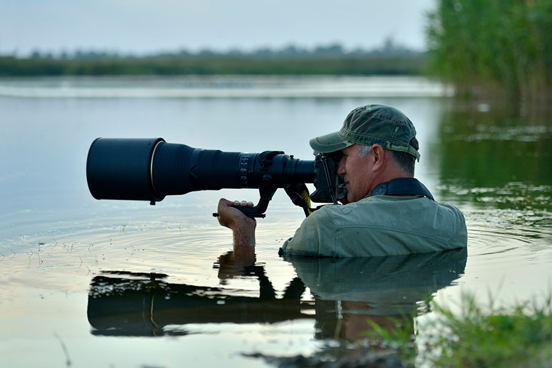
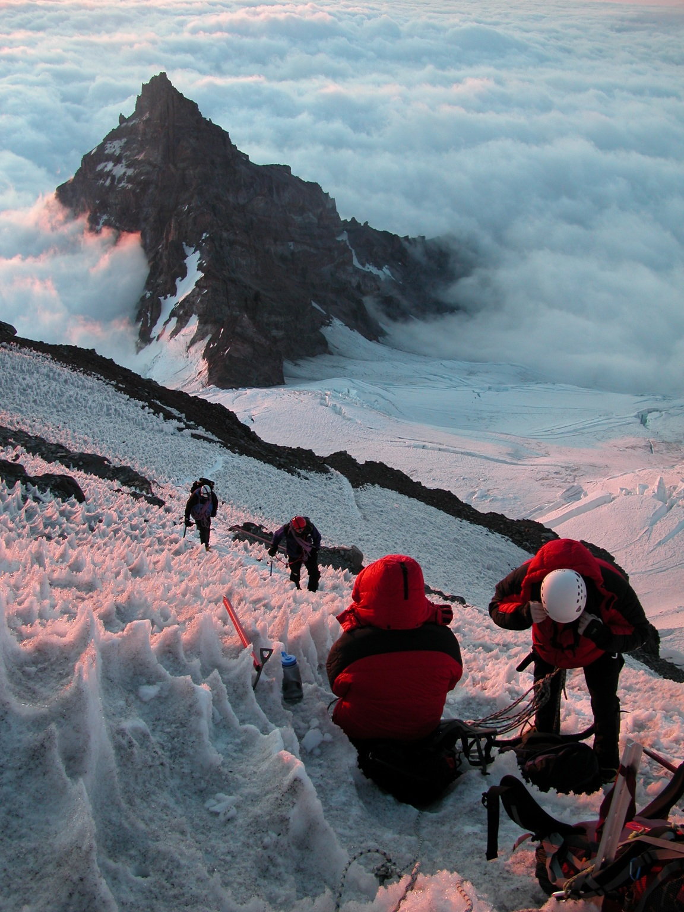
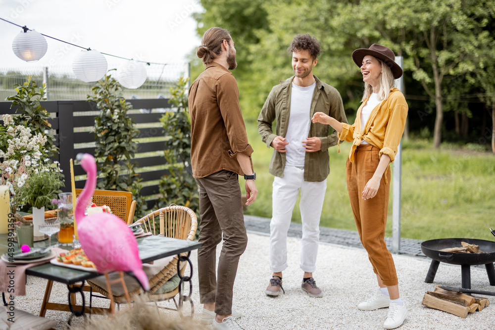
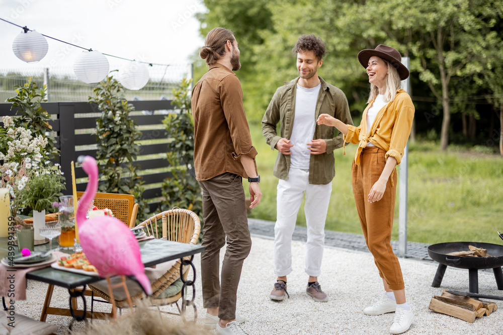
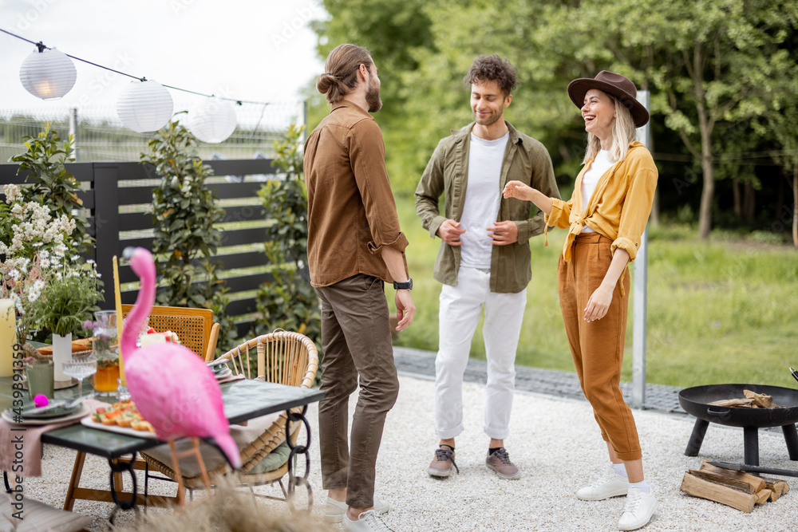

سفر های لحظه ای و انتهای مسیر
وقتی در جهان هستی که پر از است از زیبایی های درونی و بیرونی تمام منفی گرایی ها تبدیل به زیبایی و مثبت اندیشی می شود و همه ی جها در راستای مسیر تو پیشرفت میکند
بیشتر بدانید


 

